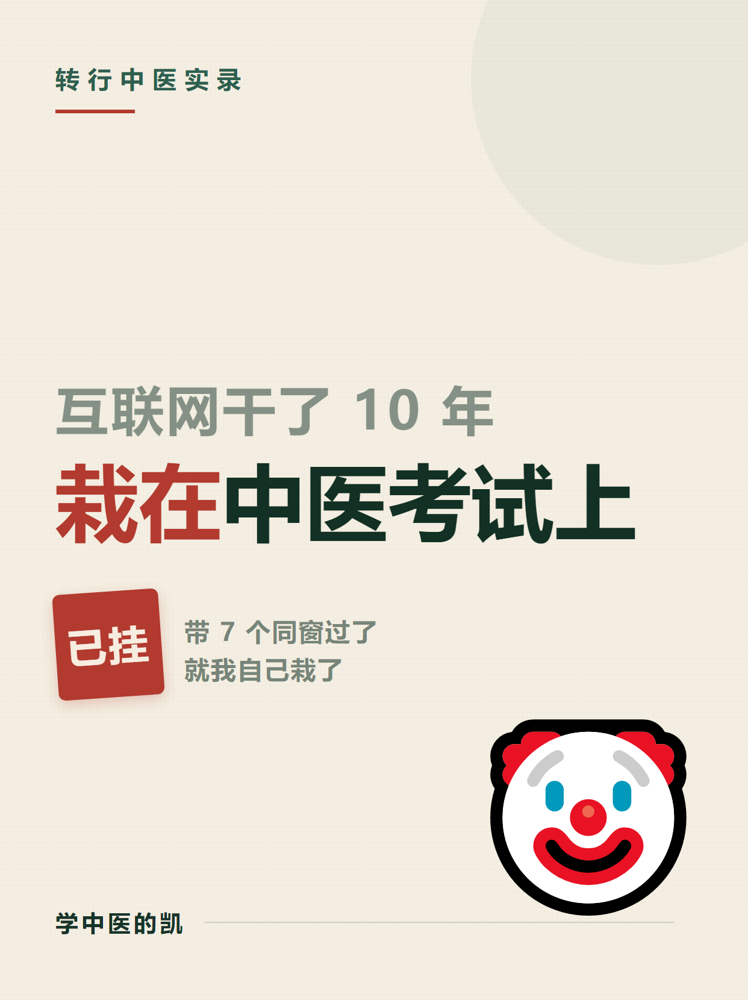
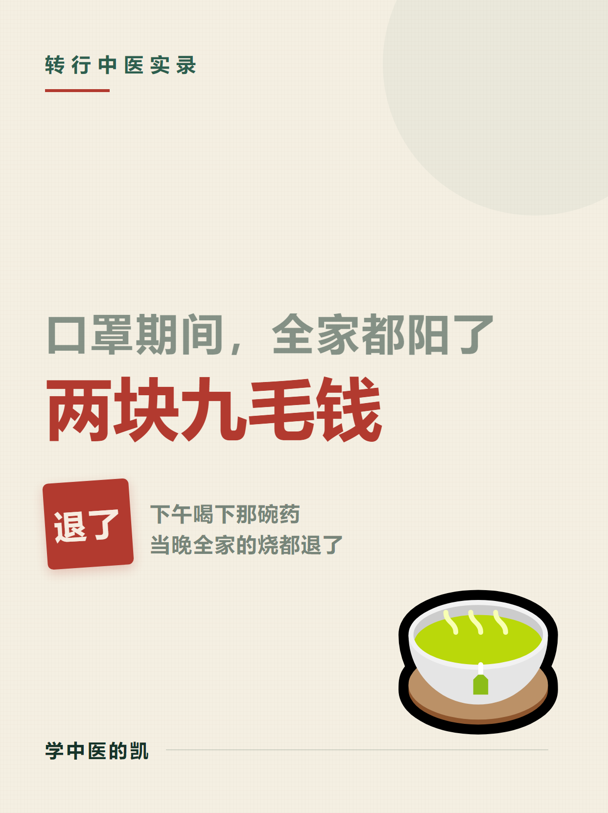
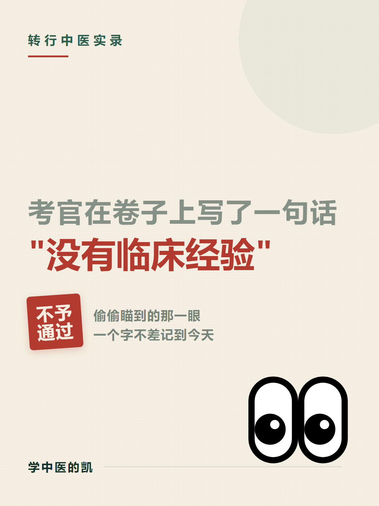
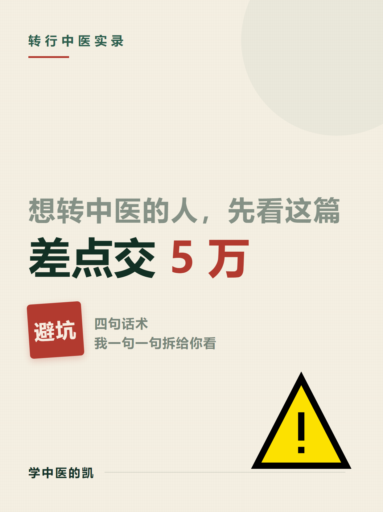
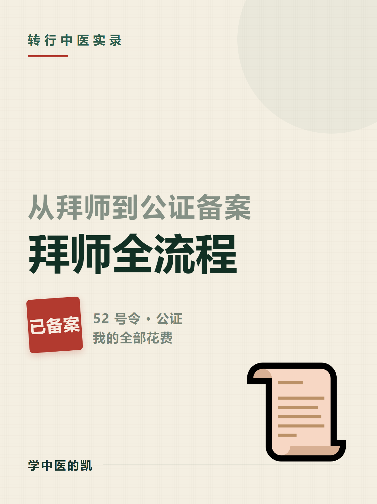

小红书 · 中医师承运营方案
账号「学中医的凯」｜从互联网人转行中医师承的全心路历程
不露脸 · 只露手和桌面
涨粉变现 · 卖课程
心路历程是包装，通关方法论是货
交付物导航
① 总运营方案
账号定位 / 人设 / 30选题 / 产品阶梯 / 变现 / 红线 / 日历
打开看板 →
② 首批内容包
人设档案 + 5 篇完整文案，一键复制正文与标签
打开文案 →
③ 封面生成器
3:4 交互封面，改字换色截图即用
打开工具 →
④ 配图拍摄清单
门面三件套 + 9图模板 + 5篇配图 + 素材库 + 红线 + 拍摄勾选
打开清单 →
⑤ 数据诊断 · 第 1 周
曝光 711 / 观看 85 / 点击率 12.0% ｜ 断点定位 + 下周对照表 + 取数口径
打开诊断 →
封面 · 首批 5 篇（1242×1660 · 可直接发）

01 · 人设总纲（置顶）
点开 → 长按保存

02 · 两块九
点开 → 长按保存

03 · 考官批语
点开 → 长按保存

04 · 机构避坑
点开 → 长按保存

05 · 拜师流程
点开 → 长按保存
源文件：
封面成品/源文件/
—— 5 个纯 CSS 的 html，双击就能看，改文案 / 换表情后重新截图即可。
备选：无表情的纸感版、深绿 A / B 版仍保留在
封面成品/
目录，需要时随时换。
说明：所有交付物以
HTML 为准
，双击可看、离线可用。原文案草稿（.md）仅作源文件留存。 账号人设统一口径：学中医的凯；不露脸，只露手和桌面；师父为四川省名中医，可提师徒关系不提姓名/科室/方子。
学中医的凯 · 项目首页 v1.0 · 由 Git 仓库托管，手机端可访问